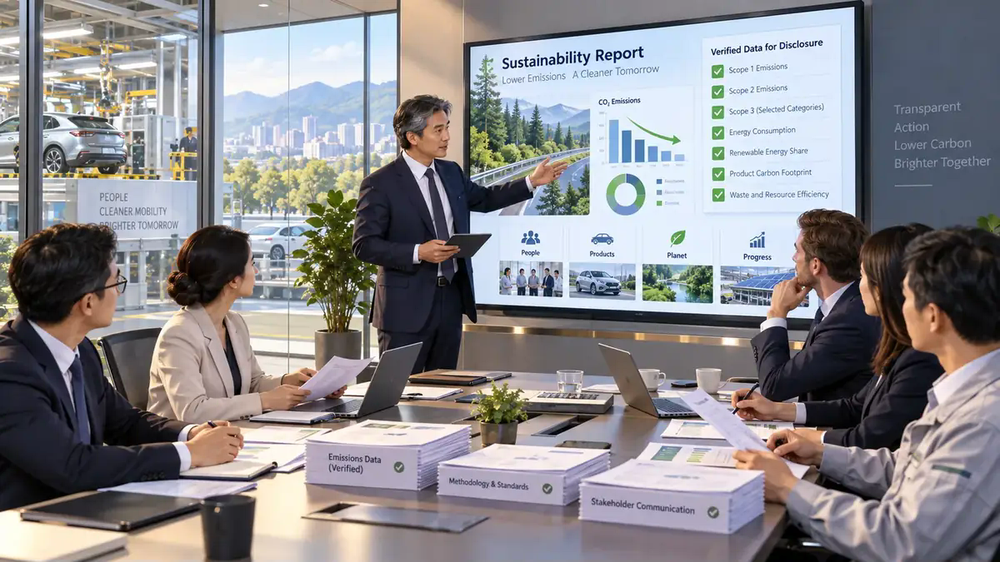

从一家真实经营中的
汽车制造企业开始。
你进入 BD 汽车工业园。采购、生产、销售、产品、市场与碳责任不是六套孤立系统，而是同一条企业经营链上的不同事实与决策。
展示模式：先理解故事，再进入沙盘操作这套展示模式讲什么？
供应、生产、销售会形成 Carbon In、Carbon Add、Carbon Out 和产品碳。
确碳、减碳、抵碳、披碳、激碳分别解决不同管理问题。
FACT ≠ DECISION；Reduction ≠ Offset；Missing ≠ Zero；WITHHELD ≠ FAIL。
BD 案例的起点
展示模式中的案例碳事实来自既有 BD 案例；经营竞争与三年模拟只在 Sandbox 中作为教学模型运行。
先确认企业在管理什么碳责任。
确碳不是简单“把排放加总”。CEO 组织企业确认责任边界、业务事实和本周期管理问题。
阶段负责人：CEO 总经理管理问题
企业需要确认：哪些业务事实属于本周期管理责任？采购、生产和销售之间的碳如何进入企业责任链？
外购电力 120 tCO₂e 属于 Production Carbon Add（生产新增碳），不是 Procurement Carbon In（采购转入碳）。
核心认识
事实先于决策，边界决定哪些碳事实进入管理。展示模式直接呈现冻结事实，不在浏览器重算。
减碳来自真实生产活动发生变化。
设备、能源、工艺和运输发生变化，才形成 Actual Reduction（实际减排）；产品碳随后递推下降。
阶段负责人：COO 生产运营总监递推逻辑
这里不能把“销售转移减少额”误当成“企业实际减排量”。
教材值与治理精确值
教材：Carbon Out 312.005 tCO₂e；Operating Carbon Net 94.895 tCO₂e。
治理精确层可显示约 311.97675 tCO₂e 与 94.92325 tCO₂e。二者必须明确标识来源层级，不能暗中调平。
真实减碳之后，再处理剩余碳责任。
抵碳使用合格碳资产与外部资源处理剩余责任。它不会重写实际减排，也不会自动降低产品碳。
阶段负责人：CCO 企业碳管理总监BD 本周期碳资产
| 资源 | 数量 |
|---|---|
| Opening Balance（期初余额） | 10 tCO₂e |
| Free Allowance（免费配额） | 70 tCO₂e |
| CCER | 3.5 tCO₂e |
| Market Allowance（市场配额） | 15 tCO₂e |
| Forest Sink（森林碳汇） | 1.395 tCO₂e |
本轮结果
Period Offset Resources（本期抵碳资源） = 89.895 tCO₂e
Closing Balance（期末余额） ≈ 5 tCO₂e
治理精确层在对应精确剩余责任下，可形成约 89.92325 tCO₂e 的 Offset Total，并保持期末约 5 tCO₂e。
经过核验的事实，才能正式对外披露。
CEO 统筹，CCO 负责事实核验。Communication 可以选择表达重点，但不能改变 Carbon Truth。
阶段负责人：CEO 总经理
边界、排放、减排、抵碳、合规与核验。
碳风险、减排绩效、碳资产与长期能力。
产品碳、低碳属性与企业真实行动。
披露链
事实闸门
“想说什么”必须先经过“事实是否支持”。不支持的零碳产品、虚构减排等声明必须被阻断。
市场和利益相关者如何回应企业行为？
激碳把消费者、市场、声誉、竞争和长期能力等证据整理成下一周期的输入，但不能强行把缺失证据补成分数。
阶段负责人：CMO 市场总监为什么是 WITHHELD？
当前只能确认 Carbon Outcome。其他证据不足，所以不强行评分，也不把缺失补成 0。
进入下一周期
Feedback（反馈）只改变下一轮决策的信息基础。下一轮 Commitment 仍必须重新确认，不能自动复制上一轮承诺。
CROCS 不是一次性核算，而是持续企业管理循环。
Commitment（确碳）→ Reduction（减碳）→ Offset（抵碳）→ Communication（披碳）→ Stimulation（激碳）→ Feedback（反馈）→ 下一周期重新确碳。
如果需要真正操作决策、观察现金、能力、产品碳信号、竞争者和三年状态延续，请进入 2027–2029 三年经营沙盘。
进入 Sandbox（三年经营沙盘）展示模式与沙盘模式的边界
展示模式（index.html）：只读解释 CROCS 核心管理逻辑和 BD 案例事实。
沙盘模式（sandbox.html）：允许你以 CEO、COO、CCO、CEO、CMO 角色依次做教学经营决策，并观察三年模拟后果。
两种模式都不在浏览器重算或覆盖 CROCS Core 的 Carbon Truth。